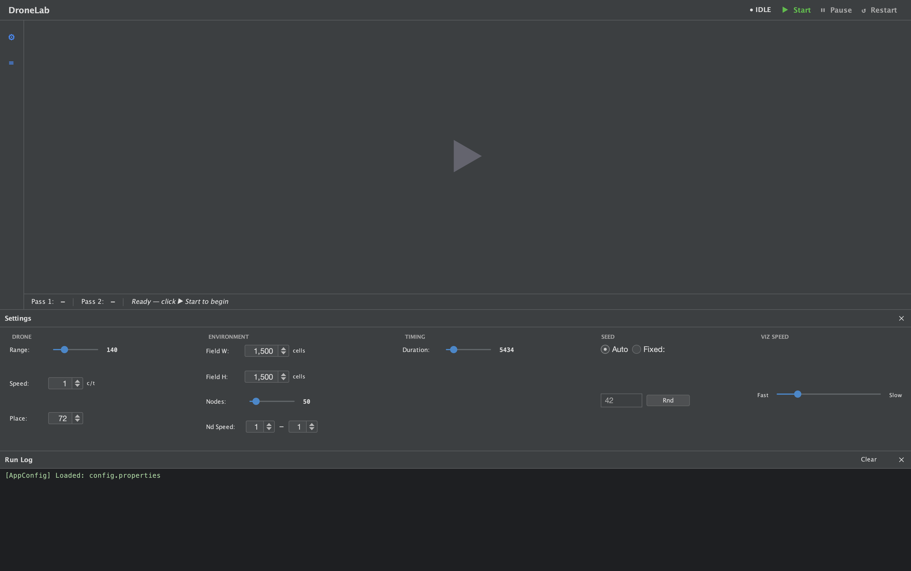
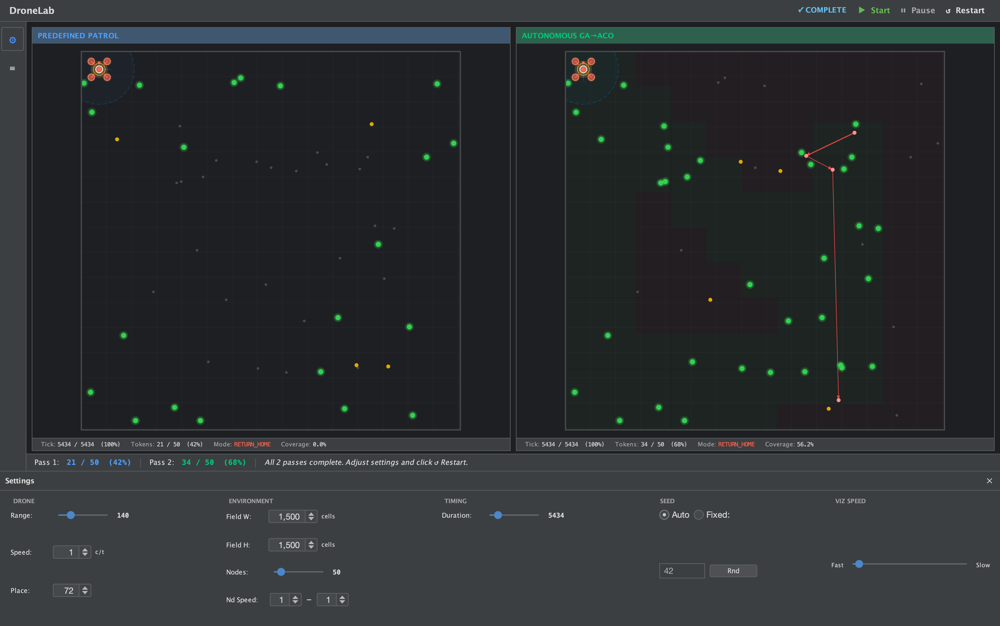
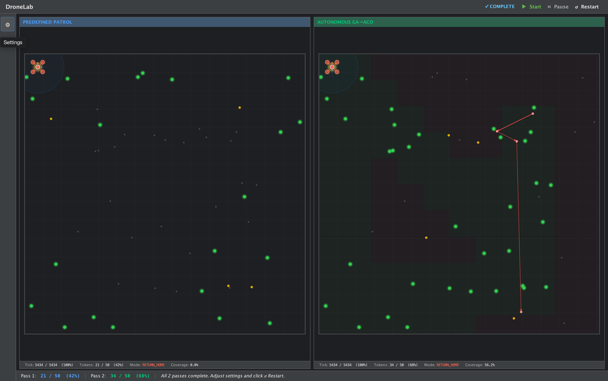
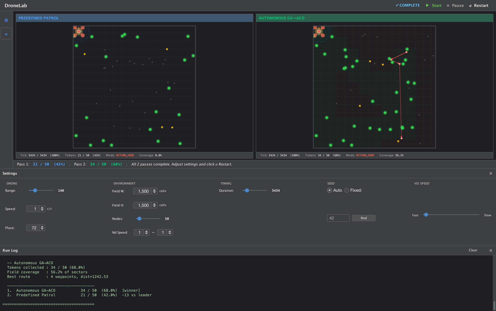
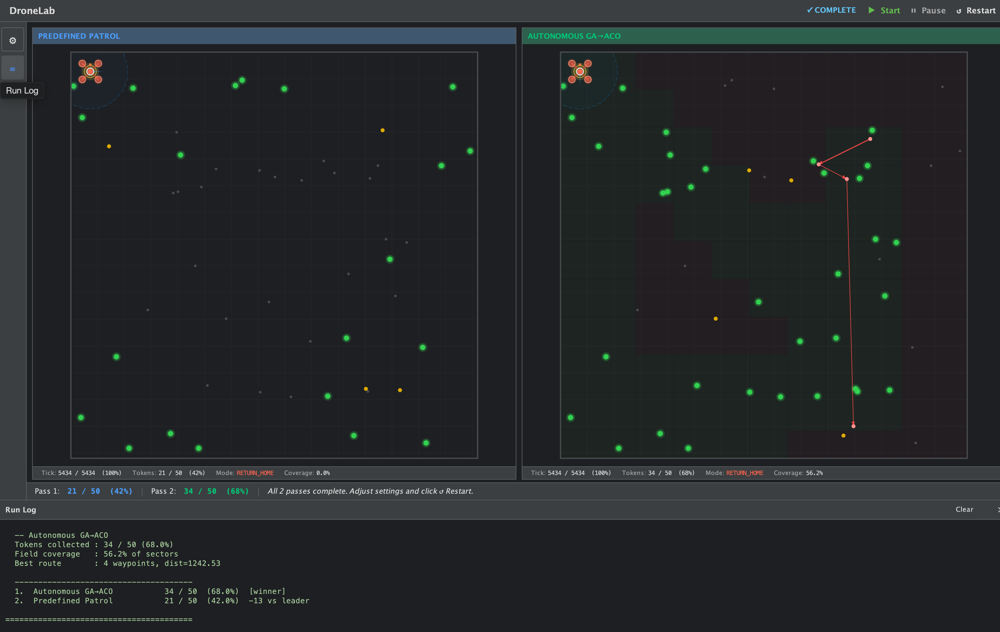

Interface Guide — DroneLab¶
A walkthrough of the DroneLab GUI for new users and researchers.
1. Idle State¶

When the application first loads, the simulation is in IDLE state. The canvas shows a centred play button. The Settings panel is accessible at any time via the gear icon (top-left) or the hamburger menu.
2. Settings Panel¶

Settings panel¶
| Section | Controls | Notes |
|---|---|---|
| DRONE | Range, Speed, Place | Range = scan radius in cells. Speed = cells per tick. Place = home row/column (UAV starts here). |
| ENVIRONMENT | Field W, Field H, Nodes, Nd Speed | Field dimensions and node count. Nd Speed sets the min–max node movement speed range. |
| TIMING | Duration | Total simulation ticks. Default 5434 ≈ one perimeter lap + 10. |
| SEED | Auto / Fixed | Auto = fresh random seed each run. Fixed = enter an integer for reproducible results. The Rnd button picks a random fixed seed. |
| VIZ SPEED | Fast ↔ Slow slider | Controls the delay between rendered ticks. Drag left for faster playback. |
Changes take effect on the next Start or Restart.
3. Mid-Run — Both Panels Active¶

Once Start is clicked, both passes run concurrently. Each panel shows:
Canvas elements¶
| Element | Colour | Meaning |
|---|---|---|
| Unknown nodes | Dark grey dot | Node known transitively (neighbour-of-neighbour) but not yet directly scanned |
| Known nodes | Amber/yellow dot | Node in the UAV's knowledge base — candidate for route planning |
| Tokenized nodes | Green dot with glow | Node directly scanned — token collected |
| UAV (PATROL) | Blue/cyan ring | Navigating toward nearest unvisited frontier sector |
| UAV (EXECUTE) | Cyan ring | Following a GA→ACO planned route |
| UAV (RETURN_HOME) | Red/orange ring | Returning to home cell at run end |
| Scan radius | Faint blue circle | UAV's current scan footprint |
| Route lines | Red lines | Active planned waypoint sequence |
| History trail | Fading blue | Recent UAV path (newest = brightest) |
| Prediction trail | Fading orange | Projected path toward next frontier target |
| Coverage overlay | Subtle green tint | Sectors already visited by the UAV |
Stats bar (below each canvas)¶
| Field | Description |
|---|---|
| Tick | Current tick / total duration (% complete) |
| Tokens | Unique direct-scan contacts / total nodes (% of field tokenized) |
| Mode | Current UAV drive mode: PATROL, EXECUTE, or RETURN_HOME |
| Coverage | Fraction of CoverageGrid sectors marked as visited |
Status bar (bottom of window)¶
Shows a live comparison across all passes:
4. Completed Run — Results¶

5. Run Log¶

When all passes finish, the status indicator switches to COMPLETE (green tick).
Run Log¶
The run log at the bottom prints a structured summary per pass and a final ranked comparison table:
-- Autonomous GA->ACO
Tokens collected : 31 / 50 (62.0%)
Field coverage : 52.9% of sectors
Best route : 3 waypoints, dist=1188.30
--------------------------------------
1. Autonomous GA-ACO 31 / 50 (62.0%) [winner]
2. Predefined Patrol 26 / 50 (52.0%) -5 vs leader
======================================
Interpreting results:
- Tokens collected — primary metric. Higher is better. Each node grants one token on first direct scan contact.
- Field coverage — proportion of CoverageGrid sectors visited. The GA→ACO strategy achieves systematic coverage; the patrol baseline covers only the perimeter.
- Best route — the final GA→ACO planned route (waypoints + total distance). Routes are replanned dynamically as the KB grows.
- Ranked table — all strategies ranked by tokens, with delta vs. the leader shown for each.
After a run¶
- Restart — resets all passes and reruns with the same settings (new seed if Auto, same seed if Fixed).
- Settings — adjust parameters before restarting.
- The run log persists until you click Clear or Restart.
Panel Titles¶
Each panel title shows the algorithm key from config.properties:
| Title | Algorithm |
|---|---|
PREDEFINED PATROL |
patrol key — fixed 4-corner patrol, no planning |
AUTONOMOUS GA→ACO |
gaaco key — frontier exploration + GA→ACO replanning |
To add a third panel, add a new key to run.intelligences in config.properties.
See the developer guide for how to implement a new strategy.
Keyboard / Controls¶
| Control | Action |
|---|---|
| Start | Begin all simulation passes |
| Pause / Resume | Freeze / unfreeze rendering and simulation |
| Restart | Reset and rerun with current settings |
| Gear icon (⚙) | Toggle Settings panel |
| Hamburger (☰) | Toggle Run Log panel |